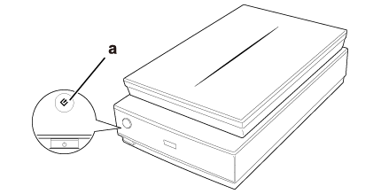

|
||
 |
||
Uruchamianie programu Epson Scan
Używanie przycisku skanera

a. Przycisk Start
Program Epson Scan uruchamia się za pomocą przycisku Start na skanerze. Następuje automatyczne otwarcie okna programu Epson Scan. Instrukcje dotyczące wybierania trybu pracy programu Epson Scan zawiera rozdział Wybór trybu programu Epson Scan.
na skanerze. Następuje automatyczne otwarcie okna programu Epson Scan. Instrukcje dotyczące wybierania trybu pracy programu Epson Scan zawiera rozdział Wybór trybu programu Epson Scan.
Z komputera
Windows 8.1/Windows 8:
Wprowadź nazwę oprogramowania w panelu search (szukaj), a następnie wybierz wyświetloną ikonę.
Wprowadź nazwę oprogramowania w panelu search (szukaj), a następnie wybierz wyświetloną ikonę.
Windows 7/Windows Vista/Windows XP:
Kliknij przycisk start, a następnie wybierz All Programs (Wszystkie programy) lub Programs (Programy) > EPSON > EPSON Scan > EPSON Scan.
Kliknij przycisk start, a następnie wybierz All Programs (Wszystkie programy) lub Programs (Programy) > EPSON > EPSON Scan > EPSON Scan.
Mac OS X:
Wybierz Go (Przejdź) > Applications (Aplikacje) > Epson Software > EPSON Scan.
Wybierz Go (Przejdź) > Applications (Aplikacje) > Epson Software > EPSON Scan.
 Uwaga dla użytkowników systemu Mac OS X v10.6.x:
Uwaga dla użytkowników systemu Mac OS X v10.6.x:|
Opcja Epson Scan jest dostępna jedynie w aplikacji Intel.
|
Następuje automatyczne otwarcie okna programu Epson Scan. Instrukcje dotyczące wybierania trybu pracy programu Epson Scan zawiera rozdział Wybór trybu programu Epson Scan.